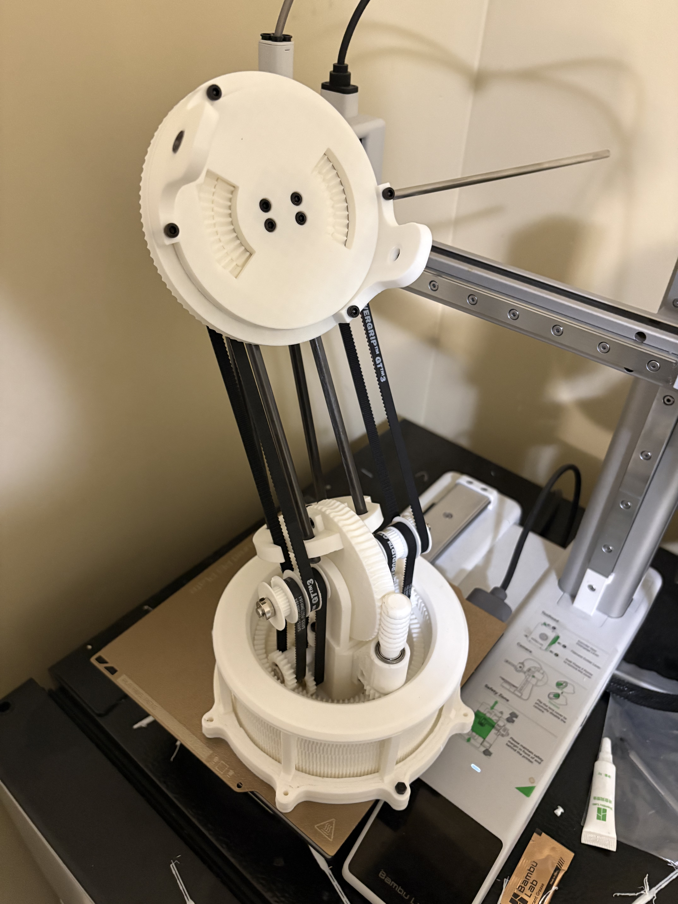
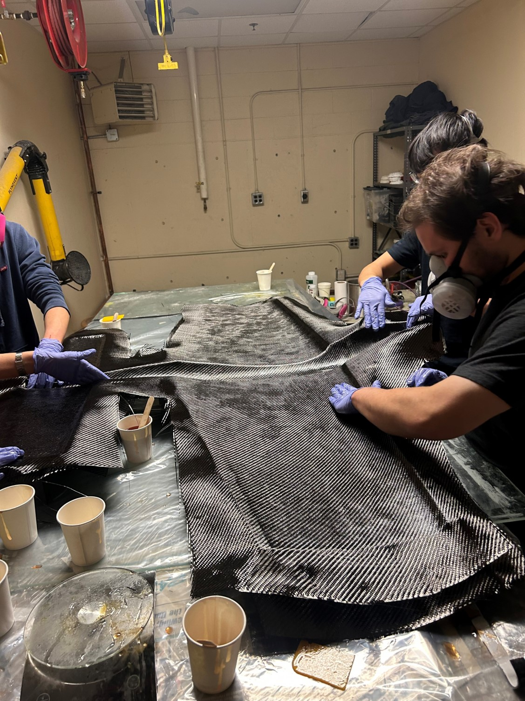
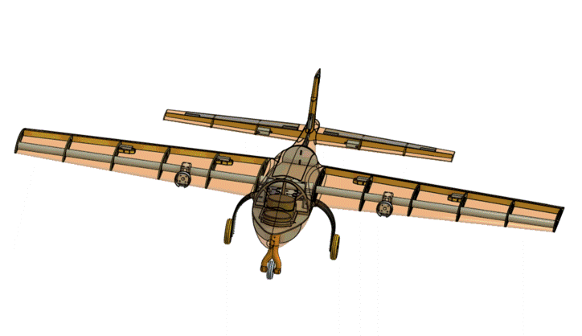
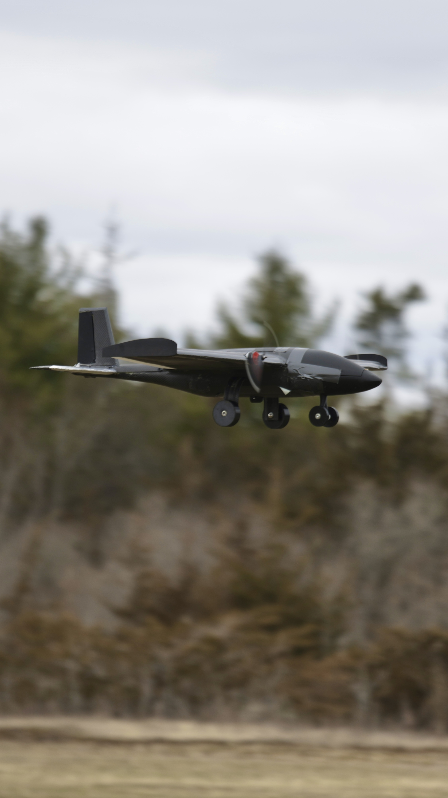
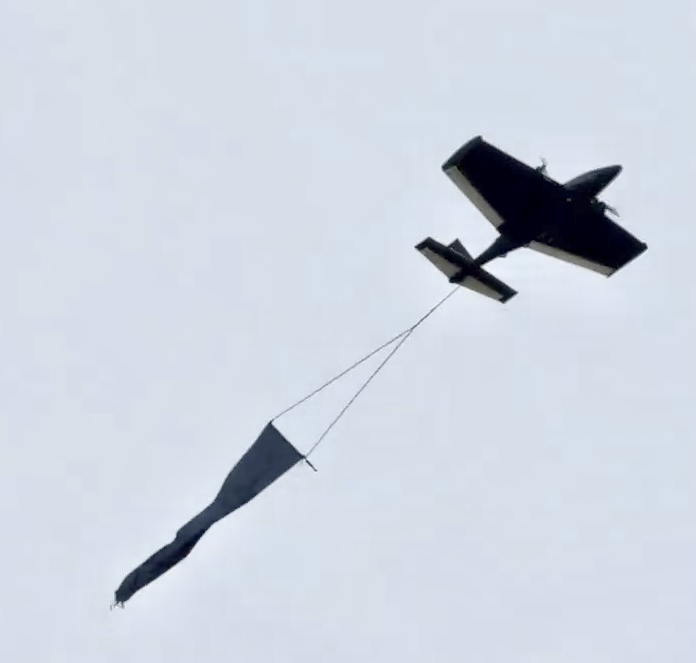
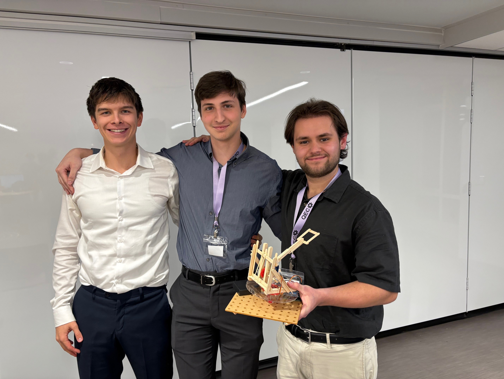

About Me
Hello! I'm Michael Cassidy, a Mechatronics and Robotics Engineering student at Queen's University. Below are some of my projects, achievements and interests. Click here to view my resume.
Projects
(WIP) 6-Axis arm with all the motors in the shoulder joint. (2026)
This project is currently a work in progress, I have completed the mechanical design of 4 our of the 6 axes.

Fixed-Wing Aircraft Design(2025-2026)
Team captain of the Queen's Aerospace Design Team's AIAA DBF competition team. Responsible for the mechanical design and manufacturing of a carbon fibre fixed-wing aircraft. Here is the design report we submitted for the competition. In this year's challenge we built a plane to hold mock passengers and cargo as well as deploy and tow a banner mid flight. Below are some photos of the design process, test flights and a video of our test flight..




Stringray Reconstruction Project (2025)
Manufactured a Stringray drone using carbon fibre layups and custom 3D-printed molds.

2025 Robot Assembly (2024-2025)
Designed and built a competitive robot for the VEXU World Championship. This robot was optimized for acceleration to grab mobile goals at the start of the match (the GIF below will provide context). To achieve this, it included several novel mechanisms including a passively unlocked potential energy accelerator which was actuated by an overcentering mechanism fired by the drive train and powered by a torsion spring. It also included a claw which passively geometrically locked and actively released to ensure other robots could not steal the goal. Finally, a power takeoff system was designed to transmit the drivetrain power to a climbing mechanism. This mechanism never made it to competition because of timeline constraints. This robot won the Build Award at the world championships with over 100 teams for the highest quality build and design. It also won the VEX AI Skills World Championship.


2024 VEXU Swerve Drive Robot (2023-2024)
Developed and built a swerve drive robot for the 2024 VEXU season, featuring custom swerve modules and advanced motion control. It also featured a deployable and retractable net which used two low profile custom cascade lifts on a turreting platform to catch balls thrown from all directions.


Odom Board PCB Design (2023)
Designed a custom odometry PCB for VEX Robotics, featuring high-precision sensor integration and compact layout. It was used to fuse lidar and encoder reading to develop a Kalman Filter based localization system

VEX Tipping Point Robot (2022)
Designed the mechanical and programmed a robot for the VEX Tipping Point competition. This robot won the Ontario Provincial Championship and competed at the VEX Robotics World Championships. It included a thorough sensor suite which allowed for dynamic mobile goal detection and on the fly odometry recalibration for more consistent autonomous routines.
Achievements & Competitions
- Queen's Engineering Competition - Senior Design - 1st Place (2025) – Competed against upper year engineering students. Tasked to build, present and write a report for a prototype drone launcher in a 5 hour time limit. The design had to shoot a projectile with variable distance and angle. The device also needed to have a safety mechanism preventing accidental discharge.

- Queen's University Dean's List (2022-2025) – Consistent academic achievement in engineering.
- VEX AI Skills World Champion (2024) – Led the team to win the world championship in AI robotics skills.

- VEXU World Champinship Build Award (2024) – Recognized for outstanding robot design and construction.


- VEXU Canadian National Champion (2023) – Won the excellence award at Canadian Nationals, given to the best overall team at the competition.
- Schulich Leader Scholar (2022) – Awarded prestigious scholarship for STEM leadership and academic excellence. Largest STEM Scholarship in Canada. Valued at $80 000.
Contact
Email: michael@shoichet.com
LinkedIn: michael-as-cassidy
GitHub: Michael-Lancebotics